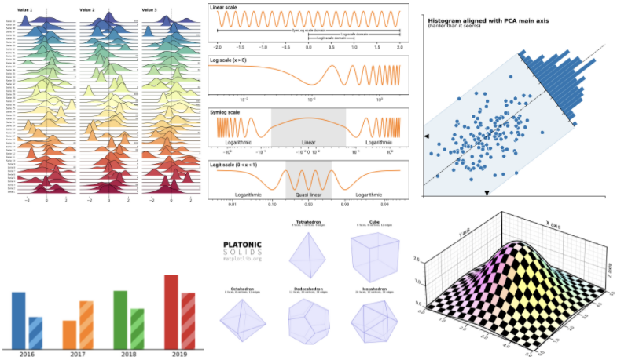
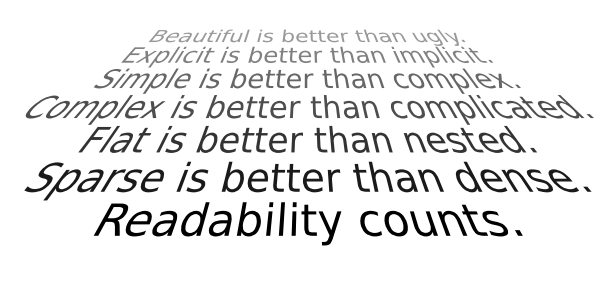
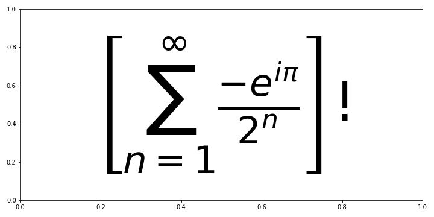
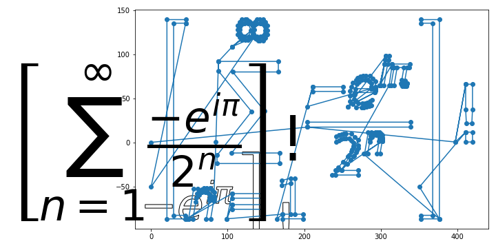
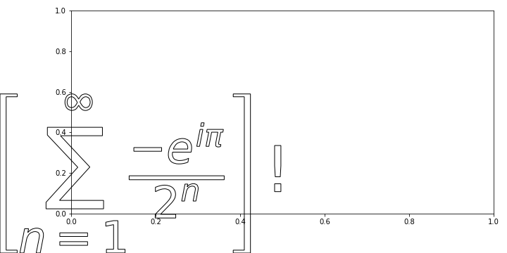
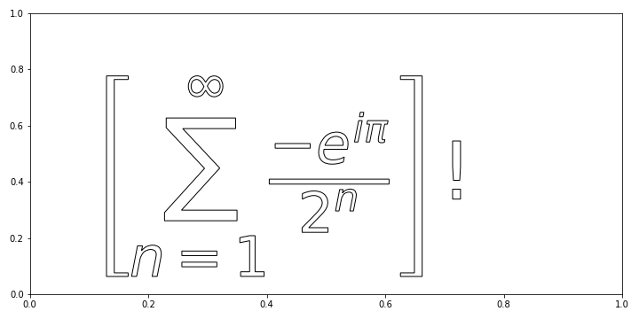
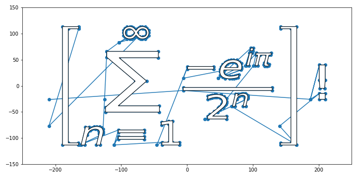
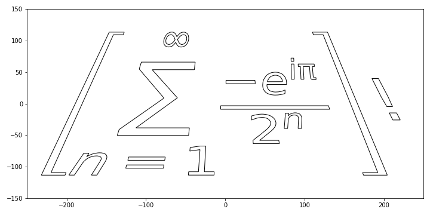
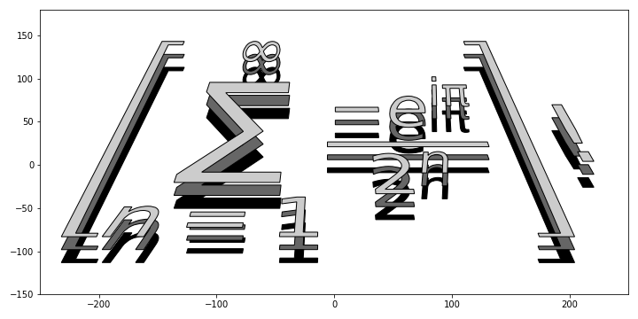
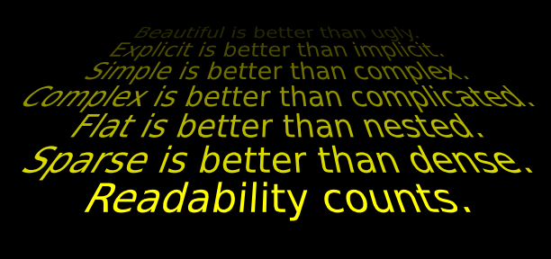

- Scientific Visualization: Python + Matplotlib 책에는 최고 수준의 시각화 기술이 담겼습니다.
- 높은 수준에 비해 설명이 다소 짧아 초심자에게 어려워 보였습니다.
- 저자인 Nicolas P. Rougier 박사님의 허가 하에 일부를 해설합니다.
- 이 시리즈는 해외 독자를 위해 영어를 회색 상자 안에 병기합니다.
- Scientific Visualization: Python + Matplotlib contains cutting-edge visualization skills and examples of Matplotlib and Python.
- Despite its high quality content, relatively short explanations in the book may prevent the readers from fully grasping all of its contents.
- With the permission of the author, Dr. Nicolas P. Rougier, I'll try to help the beginners understand the more complex concepts within the book by providing explanations and commentary where needed.
- This series will be posted in English as well as Korean, for international readers.
영어 감수: EY한영회계법인 이지수 시니어
Scientific Visualization: Python + Matplotlib
github: Nicolas P. Rougier

1. Star Wars text

- 이번에 살펴볼 그림은 영화 스타워즈의 도입부처럼 글자들이 무한 원점을 향해 소멸하는 모양입니다.
- 글자의 크기 뿐 아니라 색상도 점차 희미해져가는 모습입니다.
- This time we are going to plot lines of texts vanishing towards the point at infinity, like the lines of texts at the beginning of a Star Wars movie.
- Not only does the size of the font diminish as the text approach infinity, the opacity of the text also diminish.
2. prerequisites
- 이번 코드는 딱 하나의 기술만 알면 됩니다.
- 바로 어떻게 글자의 형상을 변환하는지입니다.
- 원본 코드를 이해하기 위해서 예제 코드를 먼저 봅시다.
- We have only one skill to learn:
- How to transform shapes of the letters.
- Let's take a look at the example codes to understand the Nicolas's.
2.1. import libraries
- 기본 라이브러리와 함께 텍스트 형상을 제어할 라이브러리를 불러옵니다.
- text를 Path로 만드는
TextPath와 Path를 Patch로 만드는PathPatch를 불러옵니다.
- We need to import text shape control libraries as well as basic ones.
-
TextPathto convert text to Path object andPathPatchto turn Path into Patch is imported.
1 | %matplotlib inline |
2.2. prepare an example text
- 복잡한 수식으로 이루어진 예제 텍스트를 준비합니다.
- Matplotlib의
Axes.text()명령으로 한 가운데 큼지막하게 넣습니다.
- An example text made up of complicated mathematics equation is prepared.
- The text is placed at the center of the figure with
Axes.text()function of Matplotlib.
1 | fig, ax = plt.subplots(figsize=(10, 5)) |

2.3. Text to Path
Text객체를Path객체로 바꿉니다.Path객체는 일종의 다각형으로 꼭지점(vertices)과 모서리(edges), 그리고 구성 형상(codes)으로 이루어져 있습니다.Path객체로 변환하고 vertices를 추출해서 좌표를 확인합니다.
- It's time to convert
Textobject intoPathobject. -
Pathobject is consisted of points(vertices), lines(edges) and shapes(codes). - We will be able to check the coordinates of the vertices after conversion by extracting vertices.
1 | eq_path = TextPath((0, 0), eq, size=90) |
실행 결과:
1
0.5 420.0953767578125 -86.41370141006101 140.0
위 그림 눈금에 보이는 것보다 크기가 훨씬 큽니다.
화면의 눈금은 아무렇게나 적힌 값이고 치수는 points 단위입니다.
- It is much larger than values seen from the ticks.
- It should be noted that the tick labels are arbitrary, and the unit of dimension is points.
- 이제
Path객체를 그림에 붙여봅니다. Path를Patch로 변환한 뒤Axes.add_artist()명령으로 붙입니다.- 추출한 vertices를 함께 그려 비교합니다.
- Let's put
Pathobject onto the Axes. -
Pathis going to be turned intoPatchobject, then pasted byAxes.add_artist()function. - The vertices extracted from the
TextPathwill be drawn together for comparison.
1 | from matplotlib.transforms import IdentityTransform |

- 뭔가 잘못된 것 같아 보입니다.
- Text, Path vertices와 Patch의 크기와 위치가 맞지 않습니다.
- 각기 원점의 정의와 화면에 표시되는 크기 기준이 달라서 그렇습니다.
- It seems something went wrong.
- The sizes and locations of the Text, Path vertices and Patch are not coincide.
- It's because of the mismatches of definitions on origin and size.
2.4. apply offset
- 위치 조정을 위해 offset 설정이 필요하며 다음과 같은 과정을 거쳐 진행됩니다.
①AuxTransformBox객체 생성
②AuxTransformBox에Patch추가
③ offset 지정
④Matplotlib.Axes에add_artist()로AuxTransformBox객체 추가
- Setting offset is required to adjust position. ① create
AuxTransformBox object② Add
Patch on AuxTransformBox③ apply offset
④ Add
AuxTransformBox on Matplotlib.Axes using add_artist()- ③ 없이 Patch를 붙이면 다음과 같습니다.
- At first, let's take a look without ③ applying offset.
1 | from matplotlib.offsetbox import AuxTransformBox |

- 이제 ③ offset 지정을 추가합니다.
- Now we apply offset(③).
1 | fig, ax = plt.subplots(figsize=(10, 5)) |

2.5. manipulate coordinates
- 방금 우리는
set_offset()을 이용해서 Patch의 위치를 변경했습니다. - 하지만 vertex 좌표를 조정하고 Path를 재구성해서 위치를 변경할 수도 있습니다.
- We modified position of the Patch by applying
set_offset(). - But there is another way - manipulating vertices coordinates and reconstructing Path.
1 | from matplotlib.path import Path |
- 실행 결과:
1
2before centering: [0.50, 420.10, -86.41, 140.00]
after centering: [-209.80, 209.80, -113.21, 113.21]

- Path vertices와 재구성한 Path를 겹쳐 그려보니 정확히 일치합니다.
- Patch에는 없는 선이 Path vertices에 보입니다. 개별 다각형에 대한 정보가 없어서 그렇습니다.
Path()실행시codes를 추가함으로써 구분되었습니다.
- Reconstructed Path and Path vertices are prefectly overlapped.
- Some lines that weren’t visible on the Patch can be seen on Path vertices. This is due to the absence of information on individual polygons.
-
codes is applied to distinguish each polygon parts.
- 꼭지점 좌표를 수정해서 Path를 재구성할 수 있다는 말은 여러 변형을 가할 수 있다는 뜻입니다.
- 아래 부분은 늘리고 위 부분을 좁히면 그림을 앞으로 기울인 듯한 효과가 납니다.
- 스타워즈 오프닝이 이렇게 시작합니다.
- Since the Path can be reconstructed after vertex coordinates modification, other transformation can be applied.
- If we stretch the bottom and shrink the top, the figure seems to be tilted forward.
- This is how the Star Wars intro crawl starts.
1 | # path from text |

- 이미지를 몇 겹으로 쌓은 효과를 낼 수도 있습니다.
- Patch를 y 축 방향으로 조금씩 움직이면서 색을 점점 밝게 입혀 보겠습니다.
- We can stack different layers of images on top of each other.
- We will move The Patch along the y-axis a little bit, and apply brighter colors on it as it moves.
1 | fig, ax = plt.subplots(figsize=(10, 5)) |

3. In Far Distance Galaxy
- Zen of Python을 스타워즈 스타일로 변형합니다.
- 한 줄씩 읽어서 Patch로 바꾸어 점점 흐리게 기울인 듯 변형합니다.
- Zen of Python is going to be transformed to Star-Wars crawl style.
- It will be transformed to tilted Patch line by line, and dimmed gradually.
1 | text = [ |
- 스타워즈 원본에 가깝도록 색을 노랗게 바꿔보겠습니다.
- Nicolas의 원본처럼 맨 앞을 선명하게 하고 뒤로 갈수록 어둡게 만듭니다.
- Python의 기본 라이브러리인
colorsys를 사용해 RGB 색공간을 HLS 공간으로 바꾸어 밝기만 조정합니다.
- Additionally, we are going to paint it in yellow color, closer to the original Star Wars intro.
- Nicolas's idea - clear in front and dim far above - will be maintained.
-
colorsys, a default library of Python will be used to control lightness in HLS space, instaed of RGB color space.
1 | fig = plt.figure(figsize=(8.5, 4), facecolor="k") |
